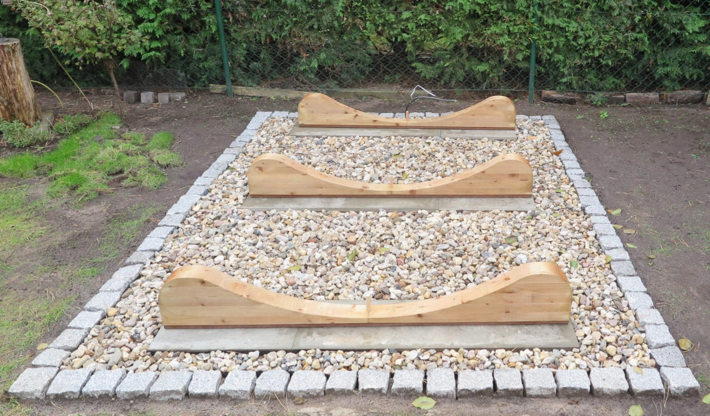
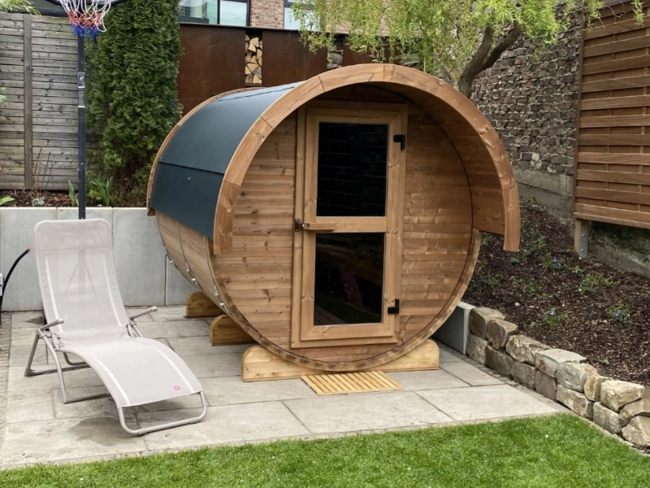

FASSSAUNA.DE
Produktbroschüre · Vorbereitung
Vorbereitungen am Bauplatz
Damit die Montage im geplanten Zeitfenster reibungslos läuft, halten Sie bitte am Aufstellort ein tragfähiges Fundament bereit. Die genauen Maße für Ihr Saunamodell finden Sie in der Maßzeichnung in dieser Broschüre.
Fundament
Ihre Sauna steht auf kesseldruckimprägnierten Hartholzfüßen. Wichtig ist ein ebenes und frostsicheres Fundament unter diesen Füßen, damit die Sauna dauerhaft gerade und trocken steht. Ob Streifenfundament oder gepflasterte Fläche, beide Wege funktionieren. Das fertige Fundament muss unbedingt in Waage liegen, damit es beim Aufbau der Sauna nicht zu Problemen kommt.



